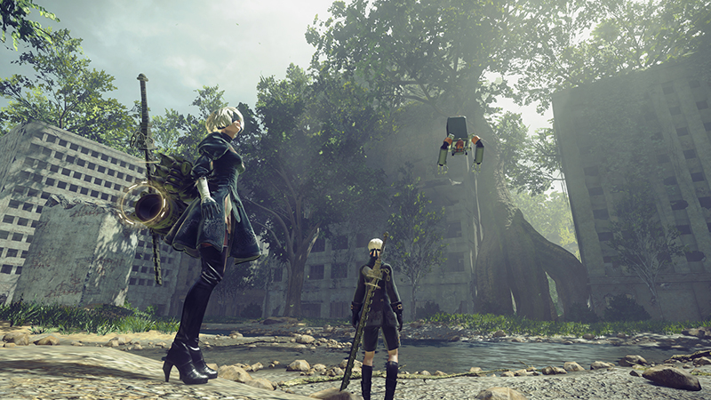

“Riveting and gratifying combat”
9/10 – Gamespot
“A breath of fresh air”
4.5/5 – GamesRadar+
“Bold, ambitious, and surprising”
Recommended – Eurogamer
《The NieR:Automata™ Game of the YoRHa Edition》包含了游戏本体以及可下载内容和追加内容，可让您充分体验这款屡获殊荣的后末日动作 RPG，包括：
* 要享受此内容，您须以特定的方式推动游戏主要剧情的发展。主游戏场景发展过程中也有部分场景无法访问此项内容。
The NieR: Automata 3C3C1D119440927 DLC is out now and includes three new colosseums to challenge, plus additional sub-quests. Upon completion of these quests, players can earn various rewards including new costumes from NieR: Replicant, new equipment and cosmetic accessories such as masks, hairspray that change the color of your character, records that add special music tracks to the players’ jukebox and much more!
9/10 "Don’t miss this" – VideoGamer
10/10 "One of the best games I’ve ever played" – RPGSite
4/5 "Pure genius" – Trusted Reviews
9/10 "One of the most interesting and unique games you’ll play this year" – God is a Geek
9/10 "Classic Platinum action combined with a deep role-playing system" – Metro
《NieR:Automata》讲述了机器人 2B、9S 和 A2 的故事，以及他们为夺回遭强大机械生命体占领、由机器驱动的反乌托邦而进行的战斗。
人类已经被来自另一个世界的机械生命体赶出了地球。为了夺回地球，人类抵抗军孤注一掷，派遣了一支人形机器人士兵军队，以摧毁入侵者。现在，机械生命体和人形机器人之间的战争开始了……而这场战争可能很快就将揭开一个早已被遗忘的世界真相。
游戏特色：
操作系统: Windows 7 /8.1 /10 64bit
处理器: Intel Core i3 2100 or AMD A8-6500
内存: 4 GB RAM
显卡: NVIDIA GeForce GTX 770 VRAM 2GB or AMD Radeon R9 270X VRAM 2GB
DirectX 版本: 11
网络: 宽带互联网连接
存储空间: 需要 50 GB 可用空间
声卡: DirectX® 11 supported
附注事项: Mouse, keyboard and game pad (XInput only). Screen resolution: 1280x720. This product only supports MS-IME keyboard input. There is a possibility that other IME will not function correctly with it.
操作系统: Windows 8.1 /10 64bit
处理器: Intel Core i5 4670 or AMD A10-7850K
内存: 8 GB RAM
显卡: NVIDIA GeForce GTX 980 VRAM 4GB or AMD Radeon R9 380X VRAM 4GB
DirectX 版本: 11
网络: 宽带互联网连接
存储空间: 需要 50 GB 可用空间
声卡: DirectX® 11 supported
附注事项: Mouse, keyboard and game pad (XInput only). Screen resolution: 1920x1080. Depending on the monitor and PC graphics card environment and setup used, this title can expand its display resolution to 4K. However, please be aware that 4K resolutions are not officially supported. This product only supports MS-IME keyboard input. There is a possibility that other IME will not function correctly with it.
《Voice of Cards: The Beasts of Burden》今天发售！
本作由“尼尔”系列和“DRAG-ON DRAGOON”系列的开发团队Yoko Taro先生、岡部啓一先生和藤坂公彦先生打造，描绘了发誓要向Monster复仇的少女的故事。
（※本作并非为第1作《Voice of Cards: The Isle Dragon Roars》和第2作《Voice of Cards: The Forsaken Maiden》的续作，因此玩家可单独游玩本作。）
另有贩售DLC，可以将游戏内卡牌背面和棋子等配件更改为以《NieR Re[in]carnation》为主题的设计。
此外，于2022年10月4日（二）00:00（UTC+8）前购买本游戏的玩家还可获得早期购买特典DLC。
～《Voice of Cards: The Beasts of Burden》简介～
在名为“Monster”的生物飞横跋扈的世界里，
人类和Monster的纷争不断，持续着对立的局面。
由于Monster的袭击而失去了重要之物的少女。
以及牵起落难少女之手的少年。
这个故事将描绘失去了重要之物的少女，在与少年的旅途中了解世界，并获得了无法取代之物的历程......
这是一个发誓要向Monster复仇的少女的故事。
失去归宿的少女，与神秘少年携手踏上了前往未知世界的旅程。
等待着他们的究竟会是希望之光，还是失望之渊呢......
本作为由“尼尔”系列和“DRAG-ON DRAGOON”系列的开发团队Yoko Taro先生、岡部啓一先生和藤坂公彦先生打造的“Voice of Cards”系列作品，该系列是以“纸牌”来展现一切游戏内容的RPG。
该系列第3作《Voice of Cards: The Beasts of Burden》已自今天起开放预购。
（※本作并非为第1作《Voice of Cards: The Isle Dragon Roars》和第2作《Voice of Cards: The Forsaken Maiden》的续作，因此玩家可单独游玩本作。）
“Voice of Cards: The Beasts of Burden + DLC套装”也已同步开放预购。本套装内含可以将游戏内卡牌背面和棋子等配件更改为以《NieR Re[in]carnation》为主题设计的DLC、可以将所有登场角色的外观更改为像素图的DLC和游戏本篇。
此外，于2022年10月4日（二）00:00（UTC+8）前购买本游戏的玩家还可获得早期购买特典。
2022/9/9 补充
此前记载的早期购买特典结束时间有误，现已更正为正确的时间。
千万别错过这个机会！
由SQUARE ENIX企划、PlatinumGames开发的动作RPG《BABYLON'S FALL》举办与《NieR:Automata》的合作活动！
化身2B、9S、A2、Commander、Operator，挑战再现《NieR:Automata》世界的任务，获得合作武器“Virtuous Contract”、“Cruel Oath”和“Machine Axe”吧！
此外，若通关合作活动限定任务，还有机会获得“Vanity Attire: Emil's Head”等合作道具！
《BABYLON'S FALL》的免费体验版现正开放下载中！
扮演在背上装上特殊装备“Gideon Coffin”的战士“Sentinel”，并充分运用四种武器，挑战登上“Tower of Babel”吧！
体验版也能够游玩《NieR:Automata》合作活动中的一部分内容。
此外，第1季中可免费使用付费内容“Premium Battle Pass”，千万不要错过这个机会喔
The following fixes will be applied in the Steam patch scheduled for release on 15/07/2021.
▼ Changes made
• Borderless Video Settings
Borderless video settings have been implemented.
• Fidelity FX
A Fidelity FX CAS feature has been added.
• HDR
The system will now detect whether HDR has been activated in the Windows display settings, and automatically boot the game in HDR mode if it has.
• Anti-aliasing
Adjustments to the anti-aliasing functionality
• UI textures (4K)
Approximately 270 UI textures for icons, backdrops and UI elements etc. now support 4K resolutions.
• Cut scenes
The bit rate has been improved and all pre-rendered cut scenes adjusted, so they will now play in 60FPS and display in the correct aspect ratio without stretching the picture.
• Global illumination
A new “Global illumination” feature has been implemented. This can be set to three different levels; High, Medium or Low.
• Ambient occlusion/ bloom
The rendering targets for ambient occlusion and bloom effects have been changed to dynamic resolution based on the game’s resolution.
▼ Bug fixes
• It is now possible to switch between recently selected display modes for screenshots, such as between full screen and windowed mode or between borderless and windowed mode, by pushing the Alt + Enter keys together.
• The mouse cursor is no longer displayed when using a game pad controller.
• The frame rate has been stabilized at 60FPS under default settings.
Other stability related fixes have also been implemented.
深受期待的《NieR Replicant ver.1.22474487139...》目前限时75折，本作描写热门作品《NieR:Automata》之前的故事。
《NieR Replicant ver.1.22474487139...》是以2010年4月发售的《NieR Replicant》为基础制作的强化版。
描写2017年2月发售的《NieR:Automata》当中的世界是如何形成的故事。
包含全新录制的语音及更加精致的画面，以及全新篇章。
另外，拥有本作的玩家，可以免费下载DLC“4 YoRHa”，能使用《NieR:Automata》的服装和武器。
NieR Replicant ver.1.22474487139...》插入于标题介面的“展示视频”正式公开。本视频完全重现原作《NieR Replicant》的演出设计，包含全新录制的语音及音乐，以及进化的画质，能一次欣赏本作世界观与游玩画面。
描写畅销作品《NieR:Automata》之前故事的动作RPG强化版──《NieR Replicant ver.1.22474487139...》将于2021年4月24日（JST）在Steam发售。
现在预购，就能获得限定数字特典。
・迷你原声带
・限定高清壁纸套组
当他穿越沙尘暴，终于看到通往沙漠神殿的入口……
本长篇游玩视频将展示年轻主角在这个神圣的地方解开古代谜团，打倒魔物，并与会动的神秘箱子对峙的模样。
《NieR Replicant ver.1.22474487139...》将于2021年4月24日在Steam发售。
现在预购即可获得迷你原声带和壁纸套组。
您迫不及待想看到《NieR Replicant ver.1.22474487139...》当中的丰富战斗动作了吗？The Game Awards 2020宣传视频中公开了多种武器及魔法攻击的画面！
《NieR Replicant ver.1.22474487139...》描写《NieR:Automata》这款广受粉丝热爱作品之前的故事，将于2021年4月24日在Steam发售。
现在预购便附赠以下预购特典。
[Alert]: Bring glory to mankind in NieR:Automata Game of the YoRHa Edition on the 26th February 2019.
NieR:Automata has surpassed 3.5 million shipments and digital sales since its initial release since its release back in 2017 and has received high praise for its compelling storyline, slick combat and memorable soundtrack. Play as androids 2B, 9S and A2 created by mankind to reclaim Earth back from invaders of another world known as machine lifeforms.
[Analysis]: The NieR:Automata Game of the YoRHa Edition features the full game as well as the 3C3C1D119440927 Expansion DLC, 4 pod designs (Grimoire Weiss Pod, Retro Grey Pod Skin, Retro Red Pod Skin, Cardboard Pod Skin), Machine Mask Accessory and 2 wallpapers.

[Proposal]: Be sure to follow the official NieR:Automata social channels for all the latest news:
From now until 14th March 2018, you can get 50% off NieR:Automata!
This is a special offer that even Emil would be proud of but just like Emil, this offer will run away and disappear if you're not quick enough so catch it while you can!
Glory to mankind.
In most cases, the latest Radeon-Software-Crimson-ReLive-Edition-17.5.2 update should resolve an issue that some of you have been experiencing in NieR:Automata where the screen can go blank or white, along with some other issues such as random hangs or game crashes after short periods of gameplay. We encourage all AMD Radeon graphics card owners to update their drivers to the latest version (17.5.2 or later) to improve the NieR:Automata playing experience.
If you are a Windows 7 user, we are aware of an issue where NieR:Automata will not boot up if used in combination with a specific display type. If this happens, turning on “GPU scaling” in the Radeon Settings App may fix the issue.
For more information and to download the latest update - Radeon-Software-Crimson-ReLive-Edition-17.5.2, please go to the AMD official website and view the new release notes for the driver.
Thanks for your continued support. Glory to mankind.